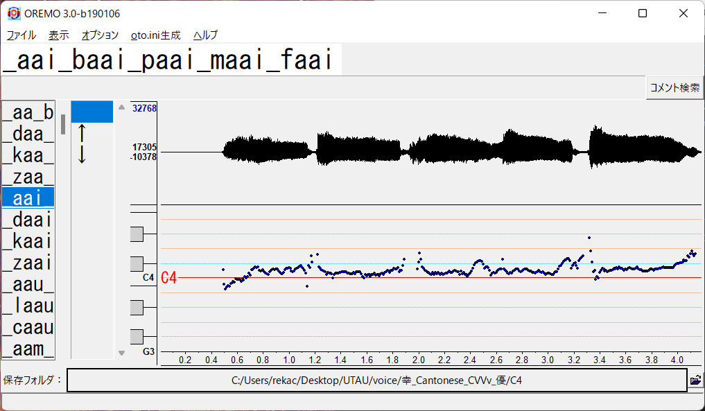
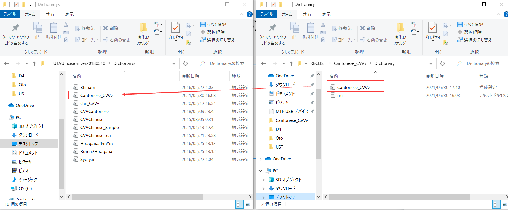
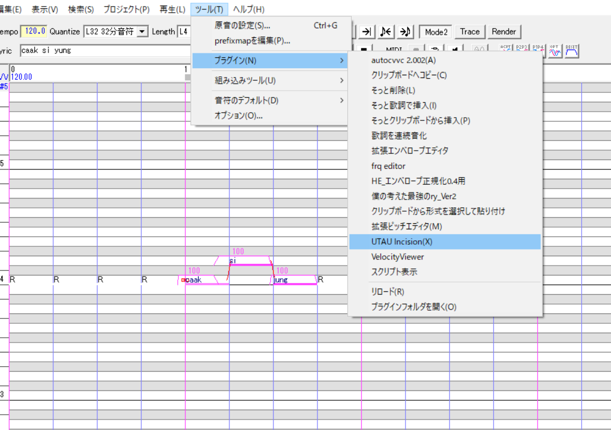
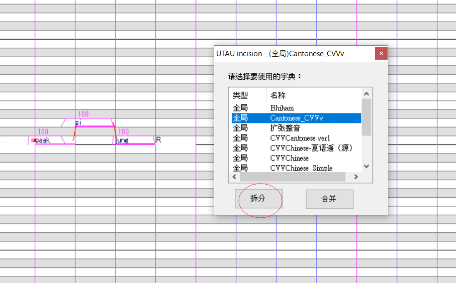
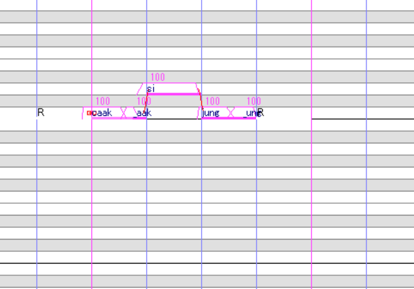

You are recommended to use SetParam(otoini tool) in this process.
This is the sample of oto in different situations.

Finally, the voicebank is completed!!!
If you have any questions, you can reference to the demoVB.
This is recoring sets which including
Download
| Recording tools | Download |
|---|---|
| Oremo | Link |
| Guide bgm(kohigashi) | Link |
The recording list is referenced by the website below.
Please refer to the pronunciation on the website.
Cantonese Character Database
Press key 'r' then the recording will be started.
Then the procedure 3 is looped until the reclist is overed.

This is a process that making the voice marking more accurate.
You are recommended to use SetParam(otoini tool) in this process.
This is the sample of oto in different situations.
Finally, the voicebank is completed!!!
If you have any questions, you can reference to the demoVB.
You may confused how to use this voicebank in UTAU, let me tell you!
UTAUincision is Downloaded here!
This is the photo procedures below.
Step 1

Step 2

Step 3

Step 4

This is a cover video I made with Cantonese CVVv voicebank.
Hope you enjoy it!!!